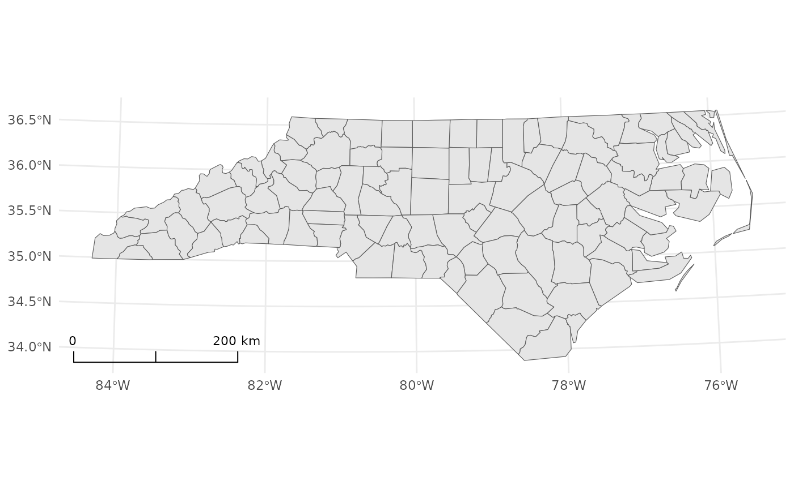
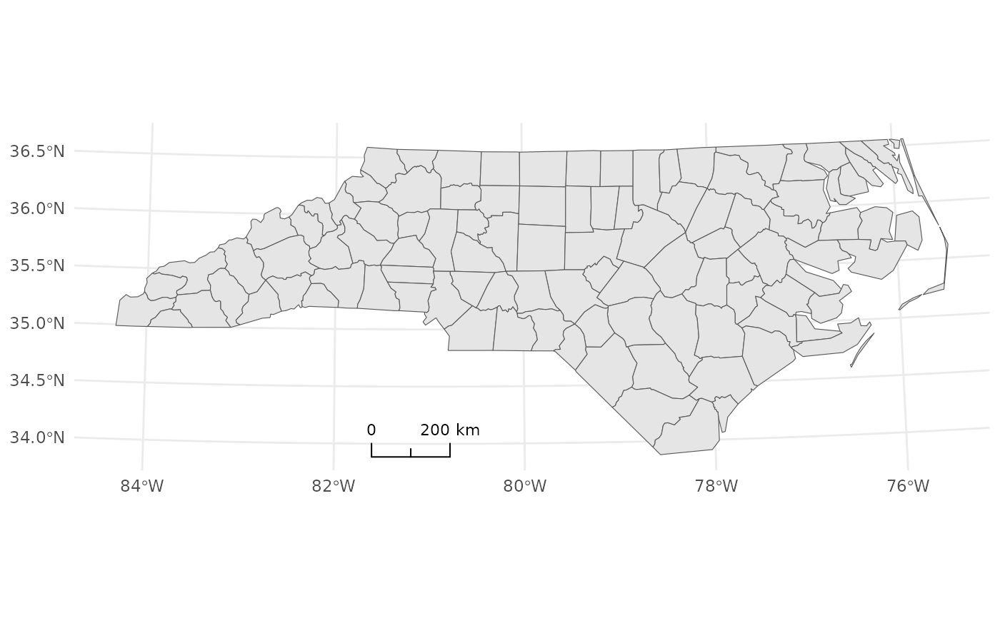
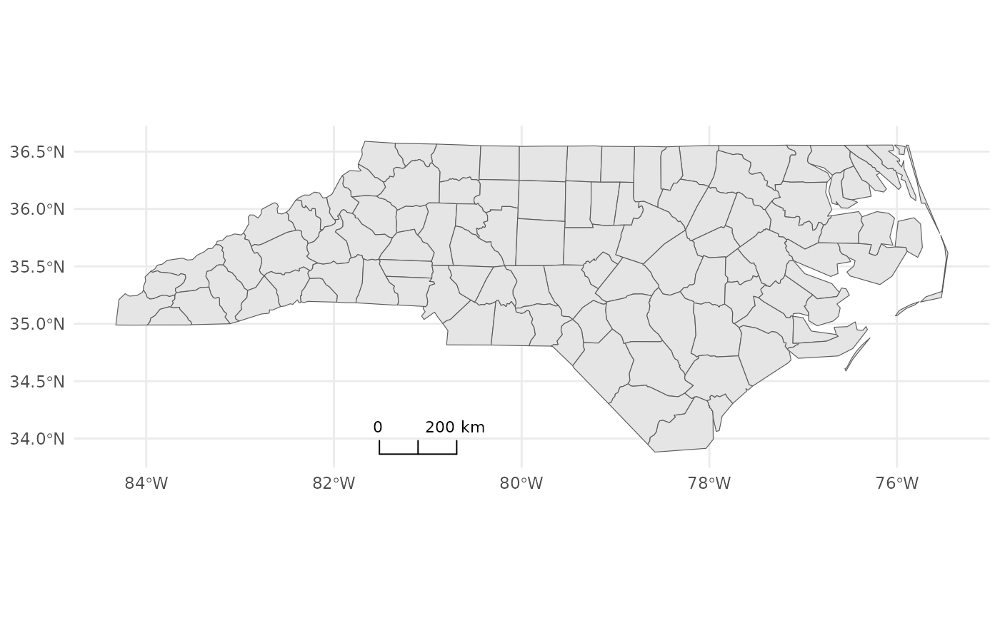
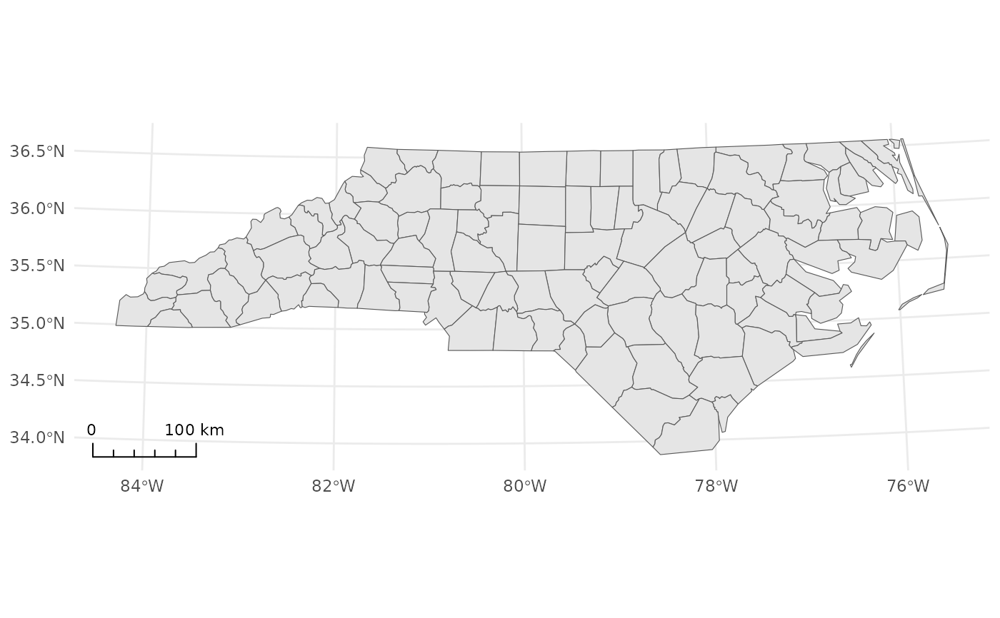
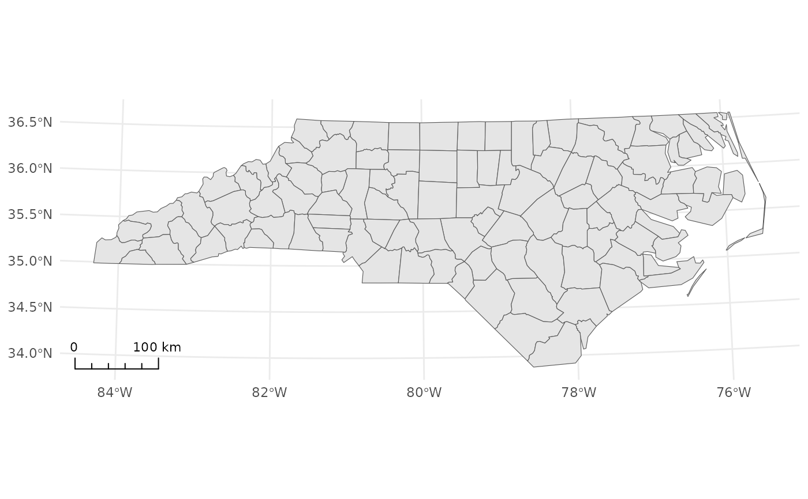

`annotation_scalebar()` adds a projection-aware scale bar to a `ggplot2` map. It detects the map's CRS and chooses a readable width and units automatically. Robust fallbacks prevent "zero-length unit" errors and allow the scale bar to render even when CRS information is limited.
Supported styles: - `"segment"` (minimal horizontal bar with ticks and labels) - `"ticks"` (baseline + vertical ticks) - `"bar"` (alternating black/white blocks)
Usage
annotation_scalebar(
mapping = NULL,
data = NULL,
...,
location = "bl",
style = "segment",
fixed_width = NULL,
crs_unit = NULL,
crs = NULL,
display_unit = NULL,
unit_labels = NULL,
width_hint = 0.25,
unit_category = "metric",
bar_cols = c("black", "white"),
line_width = 1,
height = grid::unit(0.25, "cm"),
pad_x = grid::unit(0.25, "cm"),
pad_y = grid::unit(0.25, "cm"),
text_pad = grid::unit(0.15, "cm"),
text_cex = 0.7,
text_face = NULL,
text_family = "",
tick_height = 0.6,
segments = NULL,
label_show = "ends",
minor_tick_height = 0.5,
geographic_mode = c("approx_m", "degrees"),
text_col = "black",
line_col = "black"
)
GeomScaleBarArguments
- mapping, data
Standard ggplot2 layer arguments (typically unused).
- ...
Additional parameters passed to the layer (rarely needed).
- location
Character. One of `"bl"`, `"br"`, `"tr"`, `"tl"`. Placement relative to panel edges. Default: `"bl"`.
- style
Character. Scale bar style: `"segment"` (default), `"bar"`, or `"ticks"`.
- fixed_width
Numeric. Force the bar width in *native CRS units* (e.g., meters). Overrides automatic width selection.
- crs_unit
Character. Units of the CRS (e.g., `"m"`, `"ft"`, `"°"`). Usually auto-detected; set only when auto-detection is not possible.
- crs
`sf::st_crs` object or proj string. Fallback CRS if the plot does not provide one (e.g., when not using `coord_sf()`).
- display_unit
Character. Force display units (e.g., `"m"`, `"km"`). Ignored when `geographic_mode = "degrees"`.
- unit_labels
Named character vector for i18n, e.g., `c(km = "Kilometers", m = "Meters", "°" = "°")`.
- width_hint
Numeric in (0, 1]. Target fraction of panel width used by the bar. Default: `0.25`.
- unit_category
Character: `"metric"` (default) or `"imperial"`. Affects auto-promotion (m→km, ft→mi).
- bar_cols
Character(2). Colors for `"bar"` style alternating blocks. Default: `c("black", "white")`.
- line_width
Numeric. Line thickness for outlines/ticks. Default: `1`.
- height
`grid::unit`. Bar height. Default: `unit(0.25, "cm")`.
- pad_x, pad_y
`grid::unit`. Padding from panel edges. Default: `0.25 cm`.
- text_pad
`grid::unit`. Gap between bar and labels. Default: `0.15 cm`.
- text_cex, text_face, text_family
Font settings for labels. Defaults: `0.7`, `NULL`, `""`.
- tick_height
Numeric in [0,1]. Relative height of interior ticks for `"ticks"` style. Default: `0.6`.
- segments
Integer. For `"segment"` style, number of major divisions; if `NULL`, an automatic, readable choice is used.
- label_show
Which ticks get labels: `"ends"` (default), `"all"`, `"major"`, numeric frequency (e.g., `2`), or a numeric vector of indices (1-based).
- minor_tick_height
Numeric in [0,1]. For `"segment"` style, minor ticks’ relative height. Default: `0`.
- geographic_mode
Character. For **geographic CRS** only: - `"approx_m"`: approximate meters/kilometers (default; warns about approximation) - `"degrees"`: display degrees directly (no metric conversion)
- text_col, line_col
Colors for labels and outlines/ticks. Defaults: `"black"`, `"black"`.
Details
* If a **projected CRS** is in use (e.g., UTM/AEQD with meters), the scale bar is accurate in native units. * If a **geographic CRS** (EPSG:4326, degrees) is in use, distances vary with latitude. The `geographic_mode` parameter controls how to display the scale: - `"approx_m"` (default): approximate meters/kilometers using great-circle distance at the panel's center latitude. A warning is issued. - `"degrees"`: display raw degree units (e.g., `1°`) without converting to meters. * You can also override the width with `fixed_width` (in native CRS units).
Examples
nc <- sf::st_read(system.file("shape/nc.shp", package = "sf"), quiet = TRUE)
base_plot <- ggplot2::ggplot() +
ggplot2::geom_sf(data = nc, fill = "grey90") +
ggplot2::theme_minimal()
# Example 1: Projected CRS (accurate, auto-sized)
base_plot + ggplot2::coord_sf(crs = 32617) +
annotation_scalebar(location = "bl")

# Example 2: Ticks style, top-right
base_plot + ggplot2::coord_sf(crs = 32617) +
annotation_scalebar(location = "tr", style = "ticks")

# Example 3: Geographic CRS (EPSG:4326), approximate meters (warns)
base_plot + ggplot2::coord_sf(crs = 4326) +
annotation_scalebar(location = "bl", geographic_mode = "approx_m")
#> Warning: Scale bar is approximate in geographic CRS (degrees). Distances vary with latitude. For accuracy, use a projected CRS, or set `geographic_mode = "degrees"`.

# Example 4: Geographic CRS, display in degrees
base_plot + ggplot2::coord_sf(crs = 4326) +
annotation_scalebar(location = "bl", geographic_mode = "degrees")
 # Example 5: Force a 100 km bar (projected CRS)
base_plot + ggplot2::coord_sf(crs = 32617) +
annotation_scalebar(location = "bl", fixed_width = 100000, display_unit = "km")

# Example 5: Force a 100 km bar (projected CRS)
base_plot + ggplot2::coord_sf(crs = 32617) +
annotation_scalebar(location = "bl", fixed_width = 100000, display_unit = "km")
